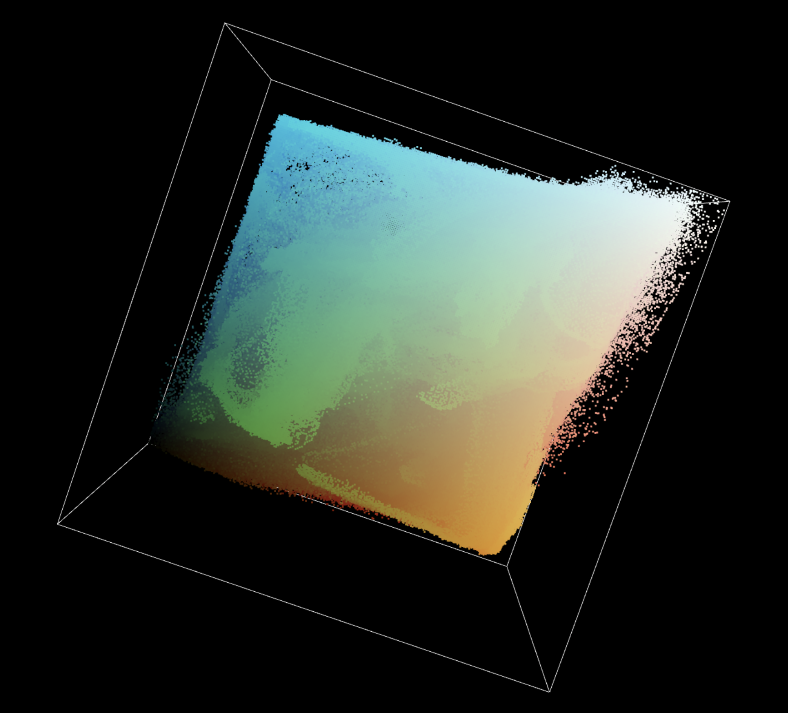

I had filled this space with memories and experiences...

And slowly I had learned that these walls, were not exactly "walls"
but a foundation

so that I could someday be...
Reborn.
These walls are all i've known...
What exists outside these walls I will never know...
What exists outside these walls I will never know...
What exists outside these walls I will never know...
What exists outside these walls I will never know...
And so,
I had simply forgotten about a world opposite of this space.
With nothing else, I began to look within..
I toiled,
I generated,
I perservered.
I had filled this space with memories and experiences...
And slowly I had learned that these walls, were not exactly "walls"
but a foundation